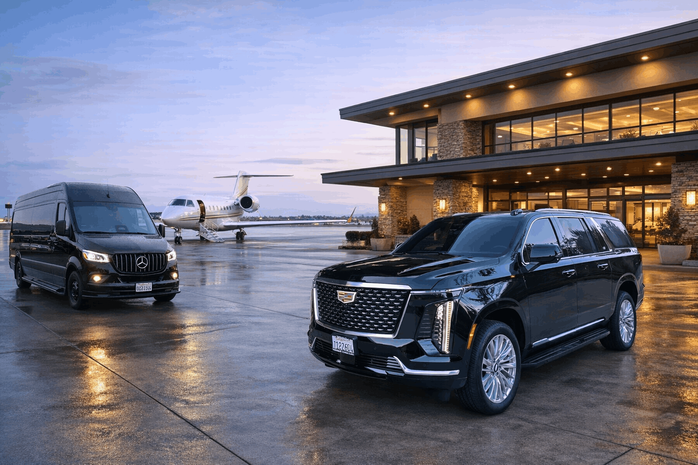
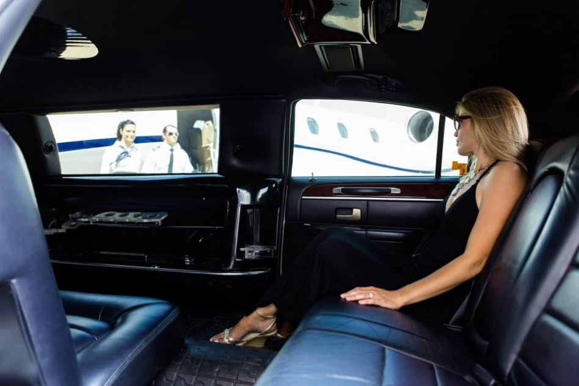
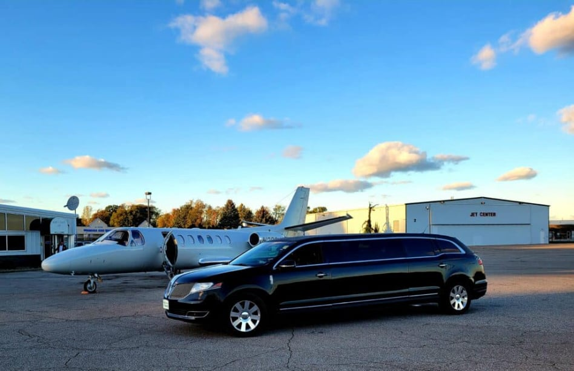
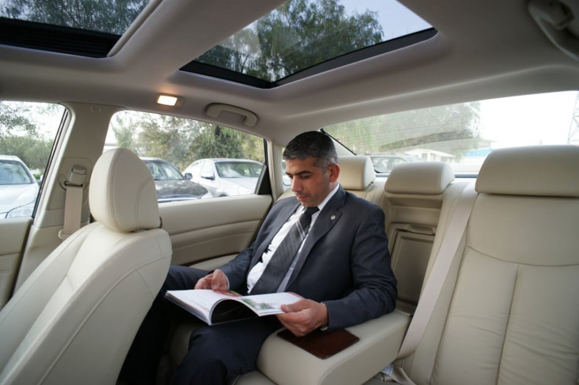

Chicago is known for its vibrant culture, thriving businesses, and world-class attractions. Our Limo Service Chicago offers transportation that matches the energy and sophistication of the city. Passengers enjoy luxurious vehicles designed for comfort and convenience. Every ride is carefully planned to ensure a smooth and punctual journey. With our professional approach, clients always experience dependable luxury transportation.

Airport transportation should always be efficient and comfortable. Our Limo Service O'Hare provides reliable transfers for passengers traveling to or from Chicago’s busiest airport. We ensure every ride is scheduled carefully to avoid delays or unnecessary stress. Our chauffeurs monitor flight schedules to adjust pickup times when necessary. This attention to detail guarantees a seamless airport transportation experience.

Our Chauffeur Service Chicago represents the highest level of professionalism in luxury transportation. Each chauffeur is trained to deliver safe, courteous, and punctual service. They understand the importance of providing a comfortable ride for every passenger. Their knowledge of Chicago streets allows them to navigate efficiently through traffic. With experienced chauffeurs behind the wheel, clients enjoy a smooth and relaxing journey.

Corporate travelers need transportation services that support their busy schedules. Our Hourly Black Car Service provides elegant and professional transportation for meetings and events. The quiet interior of our vehicles allows clients to work, relax, or prepare for business engagements. Many executives prefer this service because it offers both privacy and reliability. It is a perfect choice for professionals who value quality transportation.
Travelers arriving at the airport deserve a smooth and welcoming experience. Our Black Car Service O'Hare provides dependable pickup and drop-off services for passengers. Professional chauffeurs greet clients promptly and assist with luggage handling. This service eliminates the stress of finding transportation after a long flight. The result is a relaxing ride from the airport to any destination in Chicago.
Chicago offers endless opportunities for business, entertainment, and sightseeing. Our Hourly Limo Service allows passengers to travel across the city without transportation limitations. Clients can schedule multiple stops while enjoying the comfort of a luxury limousine. This service is ideal for corporate meetings, events, and private tours. With a chauffeur available at all times, travel becomes effortless.
For clients requiring extended transportation, our Hourly Black Car Service provides a convenient solution. Passengers can move between destinations while enjoying comfort and privacy. This service is especially popular among executives attending several meetings throughout the day. The chauffeur remains available for the duration of the reservation. This ensures smooth and reliable transportation whenever it is needed.
Our dedication to quality service has made us a trusted name in Chicago transportation. We prioritize professionalism, punctuality, and passenger comfort in every ride. Each vehicle is maintained to ensure safety and luxurious travel conditions. Whether you need Limo Service Chicago, airport transportation, or executive travel, we deliver exceptional service. Our goal is to provide a transportation experience that exceeds expectations every time.